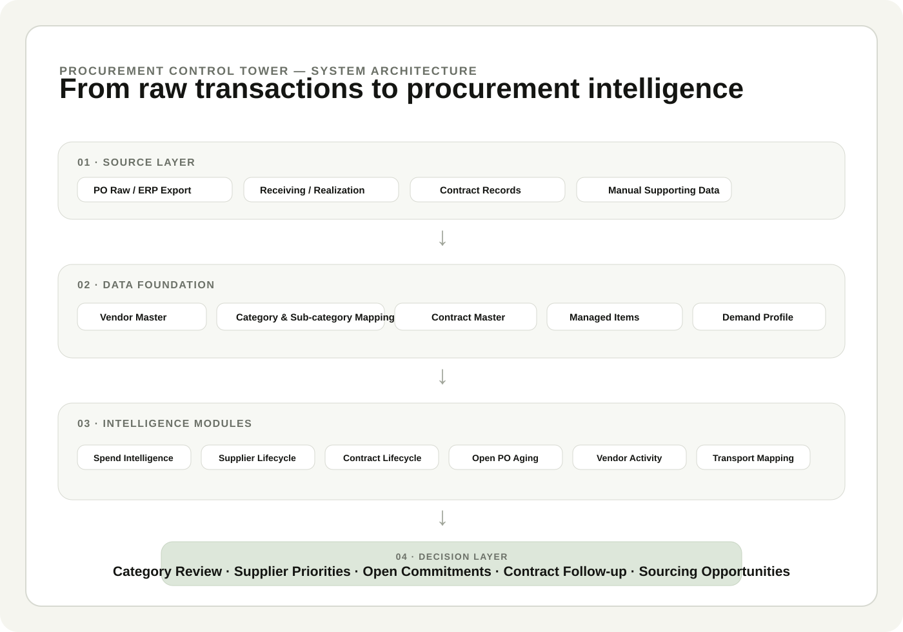
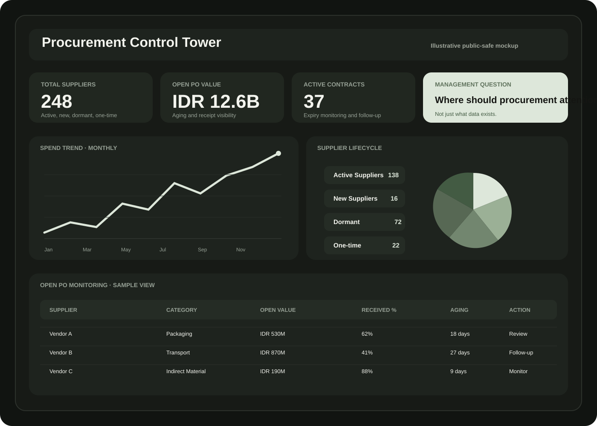
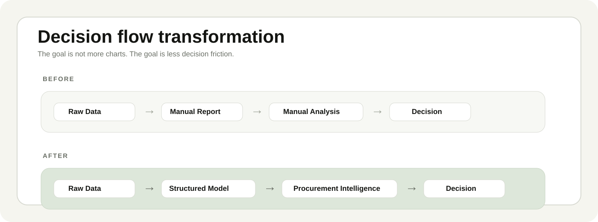

Vendor Intelligence
Supplier profile, category coverage, activity, last PO, total spend, PO frequency, and vendor status.
Turning fragmented procurement data into a structured decision layer for suppliers, spend, contracts, open commitments, and category visibility.

ERP and purchasing reports contain transactions, but management questions are rarely transaction questions. The questions are about supplier exposure, activity, category concentration, contract status, open PO, sourcing priorities, and where attention should go next.

A buyer could answer an individual question manually. But repeated manual analysis creates inconsistent logic, slow review cycles, and dependency on whoever remembers how the data was interpreted last time.
The working hypothesis was simple: if core supplier, category, contract, PO, and lifecycle definitions are structured consistently, multiple procurement questions can be answered from the same foundation.
The architecture separates raw operational data from master data, analytical logic, and the final decision views. This matters because dashboards should not become the place where business definitions are improvised.
Instead of building one giant dashboard, the system is separated into modules that share the same underlying structure. A module can improve without breaking the whole system.
Supplier profile, category coverage, activity, last PO, total spend, PO frequency, and vendor status.
Spend trends, vendor concentration, category mix, yearly comparison, and drill-down from summary to PO detail.
New vendor, active, dormant, one-time, and aging logic to distinguish supplier count from actual supplier capability.
Visibility of active agreements, expiry horizon, follow-up status, ownership, and contract-related actions.
Qty ordered, received, open balance, percentage received, and aging to reveal outstanding commitments.
Transporter mapping, regional activity, volume and trip pattern, vendor usage, and potential rationalization.
The target is not to eliminate judgment. The target is to remove repetitive preparation so judgment can focus on the question that actually requires experience and management attention.

The project was not built in a clean data environment. The system had to remain usable while data definitions, master data quality, reporting needs, and the technical platform were still evolving.
Vendor names, category mapping, dates, and transaction definitions needed normalization before the dashboard could become reliable.
Performance, formula complexity, and maintainability become real design constraints as data volume and modules grow.
Terms such as active, dormant, new, one-time, open, aging, and realized require agreed rules—not visual interpretation.
The output must answer actual procurement questions and fit review rhythms, otherwise users return to manual reports.
My contribution was not limited to preparing reports. I translated recurring procurement questions into data structures, business rules, modules, and review views that could be reused.
Convert repeated management and procurement questions into explicit system requirements.
Define how PO data, vendor master, categories, contracts, managed items, and lifecycle data relate to one another.
Define repeatable logic for supplier status, activity windows, open PO, aging, realization, and category mapping.
Build and iterate the working solution using Google Sheets and Apps Script rather than stopping at a presentation concept.
Test whether outputs answer operational and management questions, then adjust the structure when the logic is not useful enough.
Treat recurring issues, performance limitations, and new needs as inputs for the next version of the system.
A portfolio becomes less credible when it turns every project into an unverified success story. For this system, the strongest evidence today is what the system can already make visible and repeatable.
Automation makes inconsistent definitions travel faster. Data ownership and taxonomy come first.
If a chart does not change an action, priority, escalation, or decision, it may only be visual noise.
A useful procurement system cannot require more effort to maintain than the manual process it replaces.
Modules should be reviewed, simplified, retired, or redesigned as procurement priorities change.
Screens, figures, supplier names, values, and examples on this page are illustrative or generalized. Non-public company data, supplier pricing, contract clauses, internal operational issues, and personally identifiable information are not published. The purpose of this case study is to communicate the problem-solving approach and system architecture.